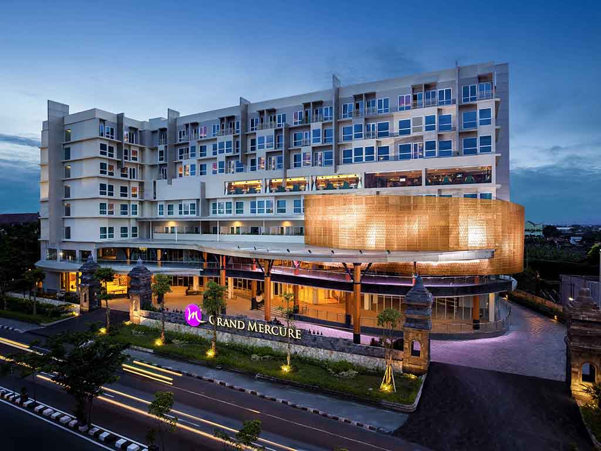
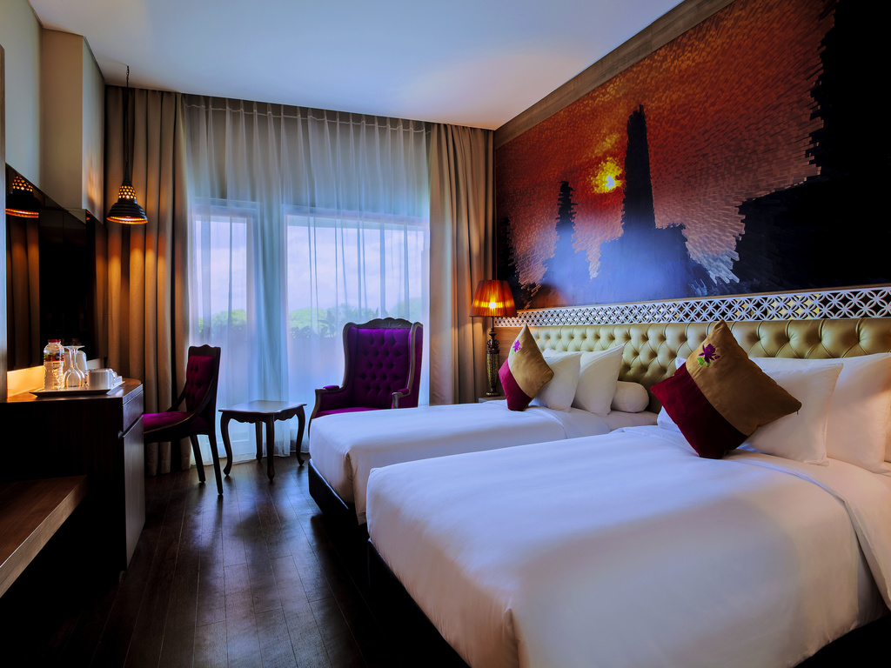

| No. | Panduan Rancangan Ulasan | Jawaban |
|---|---|---|
| 1 | Nama Objek | Hotel Grand Mercure Yogyakarta Adisucipto |
| 2 | Kategori (Hotel/Restoran) | Hotel |
| 3 | Alamat | Jl. Laksda Adisucipto No.80, Demangan Baru, Caturtunggal, Sleman, Kota Yogyakarta, Daerah Istimewa Yogyakarta 55281 |
| 4 | Nama Pemilik | Imelda Sundoro |
| 5 | Tahun Bediri | 1918 |
| 6 | Nomor Telpon | +62 274 2924000 |
| 7 | Alamat Website | https://www.grandmercure.com/city/yogyakarta/ |
| 8 | Rating Kelas (Bintang berapa?) | 5 |
| 9 | Jumlah Kamar (untuk hotel), Menu-menu Andalan Restoran | 305 Kamar Untuk Hotel. Menu-menu: Soto ayam, Nasi Gudeg |
| 10 | Fasilitas yang dimiliki | Restoran, lift, Eskalator, Ruang meeting |
| 11 | Area Publik (mal,bandara,dll.) | Museum Affandi, Malioboro |
| 12 | Kesanmu terhadap objek tersebut | Kesan saya terhadap hotel ini adalah hotel ini sangat unik karena memiliki desain interiornya yang elegan, perpaduan antara modern dan unsur budaya Jawa. |
| 13 | Adakah tempat lain yang serupa dengan objel tersebut yang kamu temukan sepanjang edutrip? Bagaimanakah perbandingannya? | Hotel lain yang sempat kami gunakan adalah Hotel Novotel Solo. Menurut saya, Hotel Grand Mercure Yogyakarta memiliki fasilitas serta pelayanan yang lebih lengkap dibandingkan dengan Hotel Novotel Solo. |
| 14 | Penilaianmu tentang kekurangan yang dimiliki ditinjau dari pelayanan, kebersihan tempat/masakan, keamanan, rasa makanan | Secara kebersihan, di toilet, terkadang ada kotoran di sekitar keran. Secara rasa makanan, Beberapa makanan untuk layanan makan pagi sama dan tidak bervariasi, seperti bubur sumsum, soto ayam, dll. |
| 15 | Penilaianmu tentang kelebihan yang dimiliki ditinjau dari pelayanan, kebersihan tempat/masakan, keamanan, rasa makanan | Staf hotel sangat ramah dan profesional dalam melayani tamu. Secara kebersihan,kamar dan area umum selalu terjaga kebersihannya. Secara keamanan,sistem keamanan hotel cukup ketat, dengan akses kartu untuk tamu dan penjagaan 24 jam. Makanan di restorannya bervariasi dan memiliki rasa yang enak |
Nama Hotel: Grand Mercure Yogyakarta Adi Sucipto
Alamat: Jl. Laksda Adisucipto No.80, Demangan Baru, Caturtunggal, Sleman, Kota Yogyakarta, Daerah Istimewa Yogyakarta 55281
Telp: +62 274 2924000
Th. Bediri: 1918
Pemilik/Korporasi: Imelda Sundoro
Rating: 5
Apakah anda pernah mendengar istilah DIY? Daerah Istimewa Yogyakarta (DIY), atau yang lebih dikenal sebagai Jogja, adalah sebuah kota kaya akan budaya yang letaknya di Pulau Jawa, Indonesia. Bagi pengunjung, Yogyakarta merupakan salah satu destinasi favorit di Indonesia, yang menawarkan berbagai macam destinasi yang menarik seperti Keraton Yogyakarta, Candi Prambanan dan Jalan Malioboro yang selalu ramai akan wisatawan. Daya tarik kepada pengunjung lainnya juga bisa disebabkan oleh budaya dan kesenian khas Yogyakarta yang meliputi batik, wayang kulit, gamelan, dan tarian tradisional khas Yogyakarta. Keunikan lainnya adalah keramahan penduduk lokal serta kuliner khas Yogyakarta seperti gudeg, bakpia dan wedang jahe yang selalu menggugah selera. Tentunya kita tidak akan bermalam di jalanan, terdapat salah satu tempat tinggal sementara yang nyaman dan mewah, yaitu Hotel Grand Mercure Yogyakarta Adi Sucipto.
Grand Mercure Yogyakarta Adi Sucipto adalah hotel bintang lima yang terletak di lokasi strategis Jalan Laksada Adi Sucipto, DIY. Hotel ini dekat dengan pusat perbelanjaan seperti Plaza Ambarrukmo, destinasi wisata seperti Malioboro, serta hanya beberapa menit dari Bandara Internasional Yogyakarta. Hotel ini dilengkapi dengan berbagai sarana, termasuk gym modern, kolam renang outdoor yang nyaman, restoran dengan menu khas lokal dan internasional, serta area bermain anak. Dari segi prasarana, hotel ini memiliki gedung megah dengan 8 lantai yang dirancang dengan konsep perpaduan antara tradisional dan modern. Luas kamar di Grand Mercure cukup bervariasi sesuai dengan jenisnya, mulai dari kamar superior dengan luas 24m2 hingga suite executive dengan luas 32m2. Harga kamar bervariasi, dengan tarif terendah untuk tipe Superior mulai dari sekitar Rp 800.000 per malam, sementara tipe tertinggi, seperti Executive Suite, dapat mencapai 3 juta per malamnya.
Grand Mercure Yogyakarta Adi Sucipto mempunyai banyak keunggulan yang dimulai dari kenyamanan pengunjung hingga keamanan pengunjung. Pelayanannya sangat baik, dengan staf hotel yang ramah dan profesional saat melayani setiap tamu. Kebersihannya juga terjaga, baik di kamar maupun di area umum, sehingga memberikan rasa nyaman dan higienis. Dari segi keamanan, hotel ini punya sistem yang cukup ketat, seperti akses kartu khusus untuk tamu dan penjagaan selama 24 jam, jadi tamu bisa merasa aman selama menginap. Selain itu, makanan di restorannya juga enak, dengan berbagai pilihan menu yang menggugah selera. Semua keunggulan ini membuat Grand Mercure Yogyakarta menjadi pilihan yang tepat bagi wisatawan yang mencari penginapan nyaman dan berkualitas.
Meskipun Grand Mercure Yogyakarta Adi Sucipto memiliki banyak keunggulan, ada beberapa hal yang bisa ditingkatkan. Dari segi kebersihan, terkadang ada kotoran di sekitar keran di toilet, yang bisa mengurangi kenyamanan tamu hotel. Selain itu, pilihan makanan saat sarapan, beberapa menu kurang bervariasi karena sering menyajikan hidangan yang sama, seperti bubur sumsum dan soto ayam. Meskipun bukan kekurangan yang besar, peningkatan dalam kebersihan dan variasi menu bisa membuat pengalaman menginap di hotel ini semakin menyenangkan bagi para tamu.
Secara keseluruhan, Grand Mercure Yogyakarta Adi Sucipto adalah hotel yang nyaman dengan pelayanan ramah, kebersihan yang terjaga, sistem keamanan yang baik, dan makanan yang lezat. Fasilitas yang lengkap seperti gym, kolam renang, dan restoran juga menjadi nilai tambah bagi para tamu. Namun, ada beberapa hal yang bisa diperbaiki, seperti menjaga kebersihan di area toilet dan menambah variasi menu sarapan agar tidak monoton. Sebagai saran, hotel ini bisa lebih memperhatikan detail kecil tersebut agar pengalaman menginap menjadi lebih maksimal. Bagi wisatawan yang mencari penginapan nyaman di Yogyakarta, hotel ini tetap menjadi pilihan yang sangat direkomendasikan.
Bagi siapa saja yang ingin berlibur atau mengadakan perjalanan bisnis ke Yogyakarta, Grand Mercure Yogyakarta Adi Sucipto adalah pilihan yang sangat direkomendasikan. Dengan fasilitas yang lengkap, pelayanan yang ramah, serta lokasi yang strategis dekat dengan berbagai tempat wisata dan pusat perbelanjaan, hotel ini menawarkan pengalaman menginap yang nyaman dan menyenangkan.
 